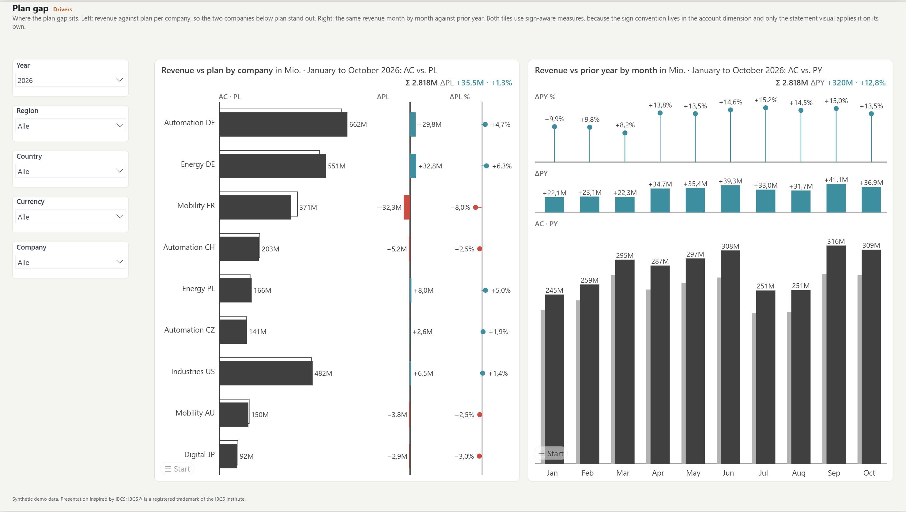
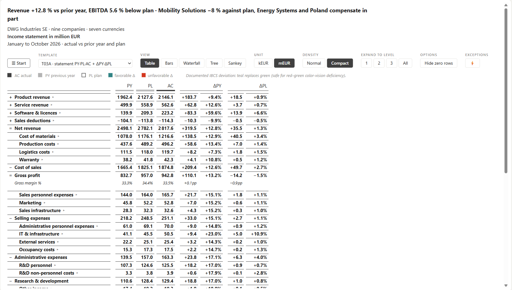
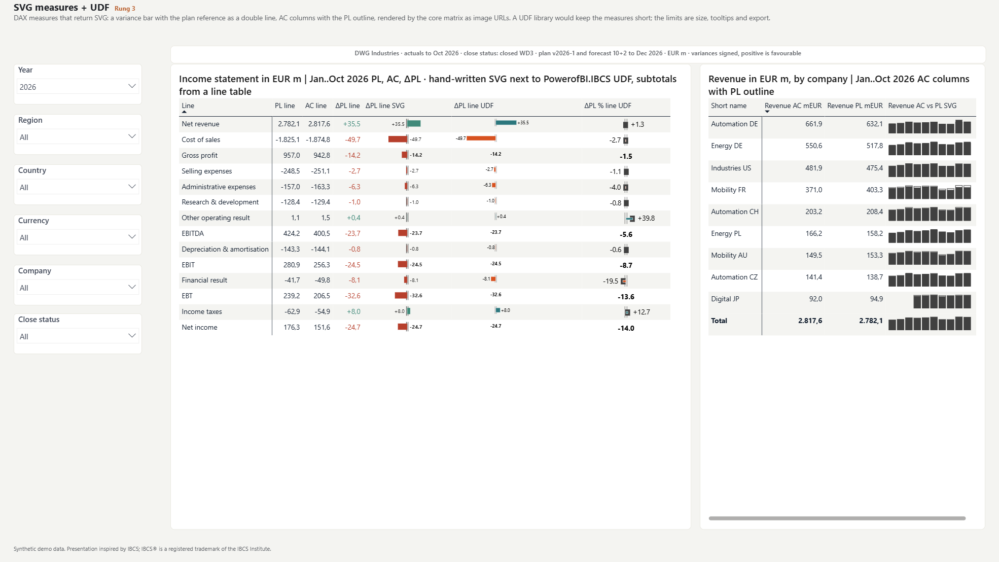

One P&L page, six rungs
On 17 November 2026 I am speaking in Budapest about finance reporting in Power BI: one model, the same P&L page built in six variants, and an honest answer to the question of what each of them costs. Here is a preview of the content, with images from the demo report.
What the talk is about
The title is "Finance Reporting in Power BI: One Model, Three Visual Stacks Compared". Finance reporting always asks the same questions: actual against prior year, plan and forecast, month, YTD and full year, local against group currency. I show a lean model that answers all of them, and on top of it the same P&L page built in several ways.
The three stacks from the title are core visuals with SVG, Deneb and a custom visual. In the talk I split them into six rungs, because there are big differences within a stack. The talk is in English, and the session page is on budapestbi.hu. This post is a preview, and the deck will still be revised before the talk.
What we want to see: actual, then a comparison
Every finance page shows the actual value (AC) and compares it with something: prior year (PY), plan (PL), forecast (FC). Not always all four, but always the same ones and always in the same notation. Actual is solid and dark, plan is an outline, and forecast is hatched because it is not real yet.
The comparisons run in two directions. In time, the months are columns. In structure, the entities are bars. It is the same visual, rotated once, with the variance in absolute terms and in percent next to it.

A P&L is a calculation, not a ranking
A P&L is not a structure you sort by size. It is a calculation scheme with operators, subtotals and a fixed layout. Every approach has to solve four things somewhere:
- Hierarchy and subtotals. Revenue is not in the fact table, it is the sum of its children with signs.
- Formulas. Gross profit, EBITDA, margins, formula on formula.
- The sign. A cost line calculates with minus one, displays positive, and "less" is favorable. If any of these is wrong, an overrun turns green.
- Time windows. Month, YTD and full year from the same monthly rows, with the forecast hatched from the last actual month.
Where these four things are solved, in DAX, in a specification or in the visual, decides the cost, the maintainability and who can still change it in two years.

One model, four rules
The model answers the questions, the visuals only draw. It consists of an account dimension, a fact table at month level, a date table and a rate table. The measures are thin, one per role. The same model sits under every rung.
Month level, blank instead of zero Granularity
A 0 in November makes November an actual month. PY, PL and FC cover all twelve months, AC is blank for open months, never 0.
The full year is a scalar Full year
The annual value sits on every monthly row. It is fetched with MAX per account, entity and year and then summed. A SUM would be twelve times too large.
The sign trio in the dimension Sign
Calculate, display, judge: three flags with three jobs. A cost line has −1, is shown positive, and less is favorable.
Currency and period status in the model Currency, status
The conversion happens before the model, not in the visual. On top comes a flag in the date table (period status "Actual"), otherwise ten actual months meet twelve plan months. Every rung inherits this trap.
Because the rules live in the model, a later switch of the visual is a rebuild of the report page, not a migration.
The six rungs
Every rung works. Every rung pays differently.
Pure Power BI Core visuals
Matrix with signed measures, conditional formatting and data bars, plus column and bar charts. No programming, and the notation is only approximated: no outlines for the plan, no variance fields on the base scale. In return, Copilot can work with it.

DAX only Text bars
Variance bars and monthly trend as Unicode characters built from measures, with the color coming from a status measure. Everything lives in the model and can be checked. The limits: the alignment is fragile, there is no scale band, and every change is a change to a measure.

SVG measures and UDF PowerofBI.IBCS
Measures return SVG images that the matrix shows in its cells. In the demo, the hand-written version sits next to the PowerofBI.IBCS package from daxlib.org: one function call per bar. The package needs compatibility level 1702 and the model culture en-US, because it writes numbers into the SVG text. Size, tooltips and export remain the limits.

Deneb and Vega-Lite Specification
The chart is a Vega-Lite specification, which means text that lives in Git. The templates come from the Business Chart Builder ("Integrated variance" and "Structural variance analysis"). Deneb is certified by Microsoft. The catch: not everyone on the team reads Vega.

Custom visual open or paid
Open: ChartKitchen and P&L Statement byDatenWG. They are free, the visual itself calculates hierarchy, subtotals, formulas and signs, and you maintain it yourself. As long as they are not certified through AppSource, they do not appear in the PDF and PowerPoint export or in subscriptions in the service. Paid: Zebra BI, Inforiver, graphomate, IBCS certified, with a license per reader. Here the rules live in the visual.
Fabric Apps Outlook
The same charts as React ports outside the report canvas. Today a preview, not in all regions, readers need build permission on the model, and there is no Git sync yet. The danger: the logic moves out of the model into the app code. More in the post on Fabric Apps.
Nothing always wins, everything costs
For the cost comparison I use the Visual Standards Calculator. It works with three-point estimates and shows ranges instead of point values. In the finance preset (5 authors, 150 readers, license anchor 80 EUR, 5 years, 125 EUR per hour), the paid and the open custom visual are on par within the range at around 144 EUR per reader and year. Deneb costs about 1.2 times as much, core with SVG 1.8 times.
What flips the ranking: the number of readers per author, because licenses grow with headcount and hours do not. In the preset, the per-seat license costs more than the cheapest hourly approach from about 176 readers. Then there is the license price, the number of semantic models (a DAX function lives per model, a visual per tenant) and hard exclusions such as a PDF requirement or a demanded IBCS certificate, which open visuals do not have.
The decision in four numbers
- Readers per author. This is where the license tips against the hours.
- License price. In the preset, the negotiation limit is around 92 EUR per user and year.
- Hourly rate. It values build and maintenance.
- PDF requirement. If the board pack is a PDF from the service or subscriptions are needed, the open custom visual is ruled out today.
Before that comes the most important step: put the rules for sign, full year, period status and currency into the semantic model. That is done once, and afterwards every stack can be swapped later.
What is in the repo
The GitHub repo for the talk contains:
- the deck,
- the demo report as a Power BI project (PBIP) with the model and synthetic data,
- the reviews of the deck,
- a guide for IBCS UDFs in the matrix, the new card and the button slicer.
If you want to continue with the Business Chart Builder from rung 4, you will find it here. It exports Deneb templates, PNG, SVG and HTML.
An honest classification
The demo data is synthetic. DWG Industries is a fictitious group, generated by a generator with a fixed seed. ChartKitchen byDatenWG and P&L Statement byDatenWG are my own project, I disclose that, and you should read my assessment of rung 5 with a discount. The cost figures come from the calculator and are an indication, not a quote. The material is a work in progress until the talk and may still change.IBCS® is a registered trademark of the IBCS Institute. The content here is not produced or certified by IBCS, and the presentation is inspired by IBCS.
Material and calculator
Deck, demo report and model in the repo. You can run the cost comparison with your own four numbers in the Visual Standards Calculator.
Talk: Budapest BI Forum 2026, 17 November, Danubius Hotel Helia.